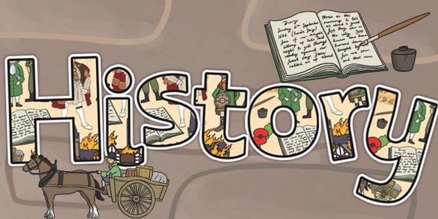

Hiểu quá khứ - Trân trọng hiện tại - Hướng tới tương lai
Môn Lịch sử (Subject): Là môn học nghiên cứu có hệ thống về quá khứ, giúp tìm hiểu về cội nguồn dân tộc, sự phát triển của đất nước và thế giới, rút ra bài học kinh nghiệm, phát triển tư duy logic và giáo dục lòng yêu nước.
Nội dung: Hình thành các nhà nước đầu tiên là Văn Lang và Âu Lạc; cư dân Việt cổ phát triển nông nghiệp lúa nước, đời sống xã hội và văn hóa dần ổn định.
Ý nghĩa: Đặt nền móng cho sự ra đời của quốc gia và dân tộc Việt Nam.
Nội dung: Nước ta bị các triều đại phong kiến phương Bắc đô hộ; nhân dân chịu nhiều áp bức, bóc lột.
Ý nghĩa: Hình thành ý thức đấu tranh và bảo vệ bản sắc dân tộc.
Nội dung: Liên tiếp nổ ra các cuộc khởi nghĩa chống ách đô hộ như Hai Bà Trưng, Bà Triệu, Lý Bí, Mai Thúc Loan...
Ý nghĩa: Hun đúc tinh thần yêu nước, tạo tiền đề cho việc giành lại độc lập, mở ra thời kỳ tự chủ từ thế kỉ X.
Nội dung: Việt Nam giành được độc lập, xây dựng nhà nước phong kiến tự chủ qua các triều đại Ngô, Đinh, Tiền Lê, Lý, Trần, Hồ, Lê sơ. Đất nước ổn định, kinh tế nông nghiệp phát triển, nhiều chiến thắng chống ngoại xâm (Tống, Nguyên - Mông, Minh).
Ý nghĩa: Đánh dấu thời kỳ phát triển mạnh mẽ của quốc gia phong kiến độc lập, khẳng định chủ quyền và bản lĩnh dân tộc.
Nội dung: Xã hội phong kiến rơi vào khủng hoảng, đất nước bị chia cắt (Nam - Bắc triều, Trịnh - Nguyễn). Nhiều phong trào nông dân nổ ra, tiêu biểu là phong trào Tây Sơn.
Ý nghĩa: Phản ánh mâu thuẫn xã hội sâu sắc, tạo tiền đề cho sự thay đổi và thống nhất đất nước.
Nội dung: Nhà Tây Sơn và sau đó là nhà Nguyễn được thành lập; đất nước thống nhất nhưng chính sách bảo thủ, lạc hậu, làm suy yếu quốc gia.
Ý nghĩa: Cho thấy sự suy thoái của chế độ phong kiến, mở đường cho các biến động lớn trong lịch sử Việt Nam sau này.
Nội dung: Thực dân Pháp xâm lược Việt Nam (1858), nhân dân ta liên tục đấu tranh chống ách đô hộ. Đỉnh cao là Cách mạng tháng Tám năm 1945, thành lập nước Việt Nam Dân chủ Cộng hòa.
Ý nghĩa: Chấm dứt chế độ thực dân - phong kiến, mở ra kỷ nguyên độc lập dân tộc và nhân dân làm chủ đất nước.
Nội dung: Tiến hành kháng chiến chống Pháp (1946-1954) và chống Mỹ (1954-1975). Kết thúc bằng Chiến dịch Hồ Chí Minh, đất nước được thống nhất.
Ý nghĩa: Hoàn thành sự nghiệp giải phóng dân tộc, thống nhất Tổ quốc, khẳng định ý chí kiên cường của dân tộc Việt Nam.
Nội dung: Cả nước đi lên Chủ nghĩa Xã hội, thực hiện công cuộc Đổi mới từ năm 1986 và đẩy mạnh hội nhập quốc tế.
Ý nghĩa: Đưa đất nước từng bước phát triển, nâng cao đời sống nhân dân và vị thế của Việt Nam trên trường quốc tế.
Năm sinh: Chưa rõ (khoảng cuối thế kỉ I TCN)
Năm mất: Năm 43
Quê quán: Mê Linh (nay thuộc Hà Nội)
Thành tựu - công lao:
Năm sinh: 1933
Năm mất: 1952
Quê quán: Đất Đỏ, Bà Rịa - Vũng Tàu
Thành tựu - công lao:
Năm sinh - mất: 1890 - 1969
Quê quán: Kim Liên, Nam Đàn, Nghệ An
Thành tựu:
Năm sinh - mất: 1867 - 1940
Quê quán: Nam Đàn, Nghệ An
Thành tựu:
Năm sinh - mất: 1872 - 1926
Quê quán: Tam Kỳ, Quảng Nam
Thành tựu:
Tổng khởi nghĩa giành chính quyền tại Hà Nội (Cách mạng tháng Tám)
Chủ tịch Hồ Chí Minh đọc Tuyên ngôn Độc lập tại Quảng trường Ba Đình
Chiến thắng Điện Biên Phủ, kết thúc kháng chiến chống thực dân Pháp
Đại thắng mùa Xuân, giải phóng hoàn toàn miền Nam, thống nhất đất nước
Archives.org.vn - Website của Cục Lưu trữ Quốc gia (Châu bản, Mộc bản triều Nguyễn, hồ sơ kháng chiến)
Nlv.gov.vn - Thư viện Quốc gia Việt Nam (Báo chí cũ, sách Hán Nôm và tài liệu số hóa)
Vass.gov.vn - Viện Hàn lâm Khoa học xã hội (Các công trình nghiên cứu và khảo cổ)
Sugia.vn - Chuyên trang của Hội Khoa học Lịch sử Bình Dương, bài viết có tính chuyên môn sâu
Tạp chí Phương Đông - Phân tích lịch sử chính trị, quân sự và văn hóa Việt Nam
History.com - Nguồn tiếng Anh tốt nhất về lịch sử thế giới (trực quan, có video)
British Pathé (Youtube) - Kho phim tư liệu thực tế về các sự kiện thế kỷ 20 trên toàn cầu
Đuốc Mồi (Youtube) - Diễn họa lịch sử Việt Nam bằng hoạt hình sinh động, dễ tiếp cận cho người mới